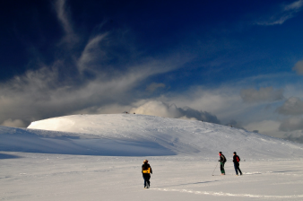

Ice mass reduction
Recent discoveries show a reduction in ice masses from the north. The reduction in ice mass from the north has grave significance for the environment and our lives. Due to global warming, several icebergs crumbles away, and whatever ice masses lying elsewhere are slowly chipping away.
This poses several threats, being the following:
- This sudden change puts any fauna living in these areas under great jeopardy.
- In terms of habitational danger, such events are prone to natural disasters.
- Areas like these are sometimes good places for scientists to experiment and fine ways to conteract against what puts icy environments at risk. It is essential to help preserve areas like these.
